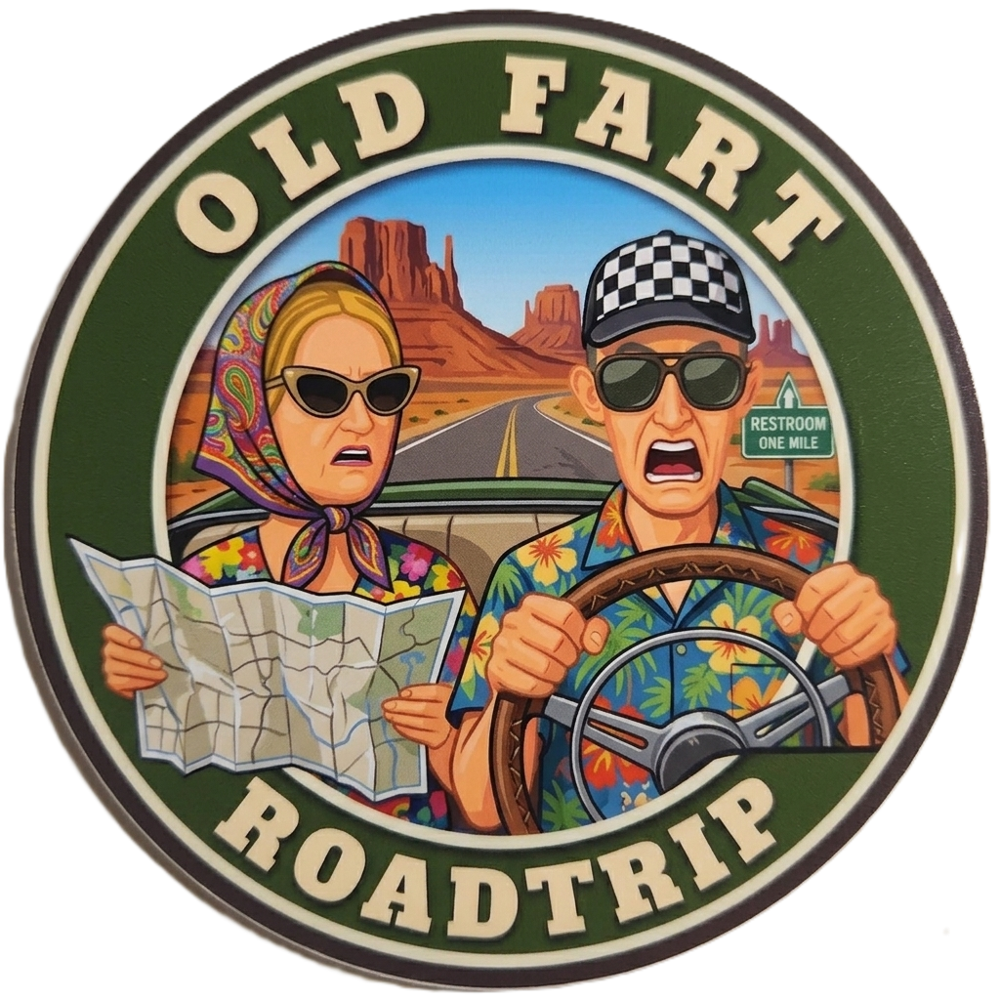
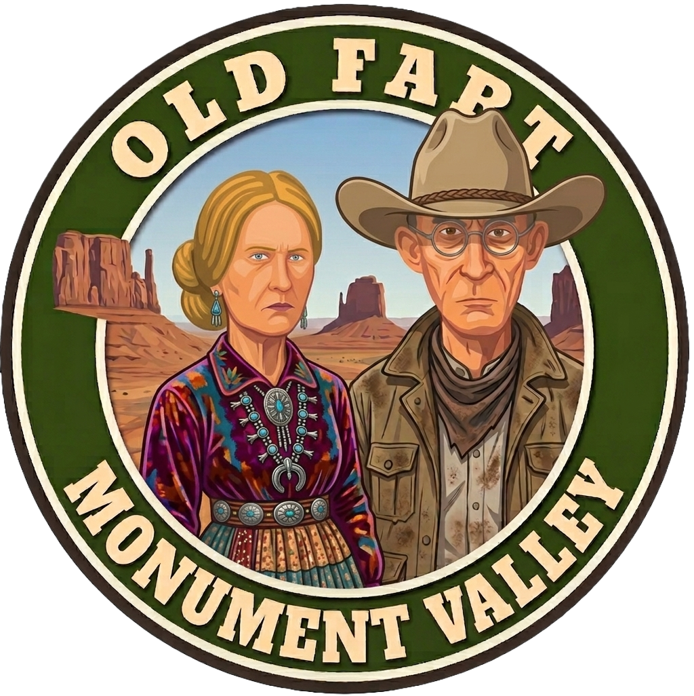
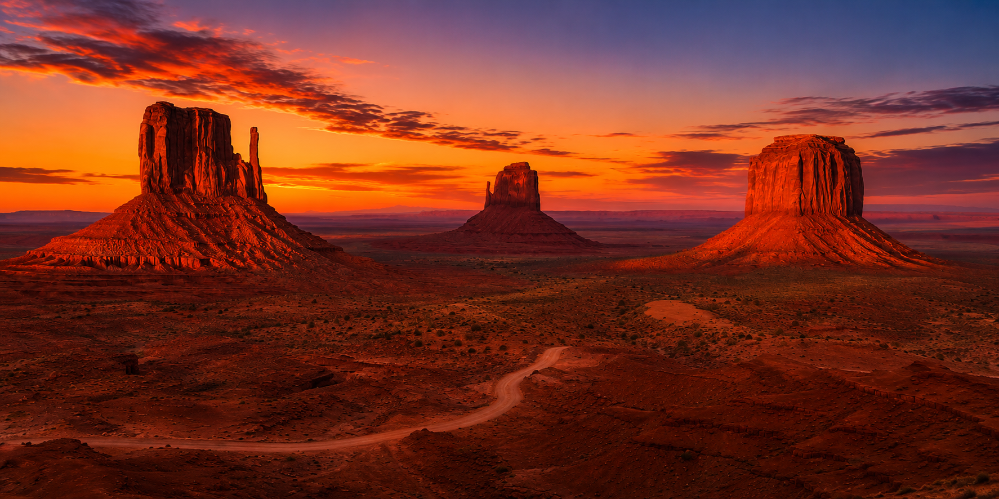
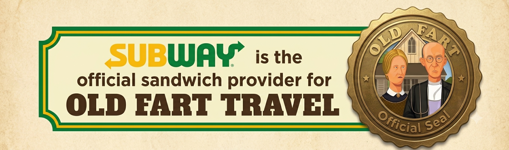
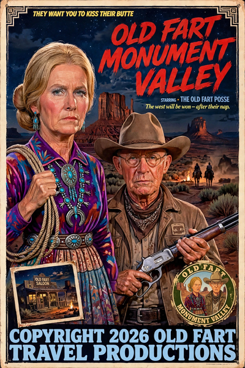

🍔 Lunch
Galaxy Diner – Flagstaff
A classic Route 66 diner serving burgers, comfort food, and more than 100 flavors of milkshakes.
🍽️ Galaxy Diner Menu
Phoenix Airport → Monument Valley • Saturday, August 1, 2026

Old Fart Travel's Rock Tour Road Trip 2.0 opens with one spectacular opening act—a mad dash across northern Arizona to one of the most breathtaking landscapes in the American Southwest.
The goal isn't just to get there.
It's to arrive in time for one of the most unforgettable sunsets of the entire vacation.
As the sun drops lower in the sky, the Mittens and Merrick Butte begin glowing with deep reds and brilliant oranges while long shadows stretch across the valley floor. It's one of the signature moments of the entire trip.

Galaxy Diner – Flagstaff
A classic Route 66 diner serving burgers, comfort food, and more than 100 flavors of milkshakes.
🍽️ Galaxy Diner MenuSubway – Kayenta (Preferred)

OR
The View Restaurant
🍽️ Restaurant MenuMonument Valley, Utah
One of the few hotels located inside Monument Valley Tribal Park, The View offers spectacular panoramas directly from the property. If we're on schedule, we'll have time to relax before heading out to enjoy one of the most memorable sunsets of the entire trip.
Check-in: 4:00 p.m. (target)
🏨 The View Hotel WebsiteFlagstaff is the last major shopping stop before Monument Valley. Grocery prices and gas are generally better here than farther north, so it's the perfect place to stock up before heading into Navajo Nation.
🌅 Sunrise: 6:05 a.m. (MDT)
Welcome to Utah... barely.
Tomorrow we'll tour Monument Valley, visit some of the Southwest's most iconic viewpoints, and officially begin exploring one of America's most spectacular landscapes.
Old Fart Monument Valley — the feature presentation for Opening Day.

We didn't get to see enough of you when you were home last month.
Here's to twelve days of making up for lost time.